ACME visit · Gran Sasso Science Institute, L'Aquila · 17 Nov 2026
Chasing the impossible: the quest for coincident gravitational wave-neutrino sources
Matthias Vereecken
Matthias Vereecken · ACME visit · GSSI, L'Aquila
ACME visit · GSSI
What I learned at GSSI so far
“T₉₀ is a lie”
“GRB physics is exciting because we don't have good data”
“GSSI recommends eating at McDonald's”
Matthias Vereecken · ACME visit · GSSI · 2
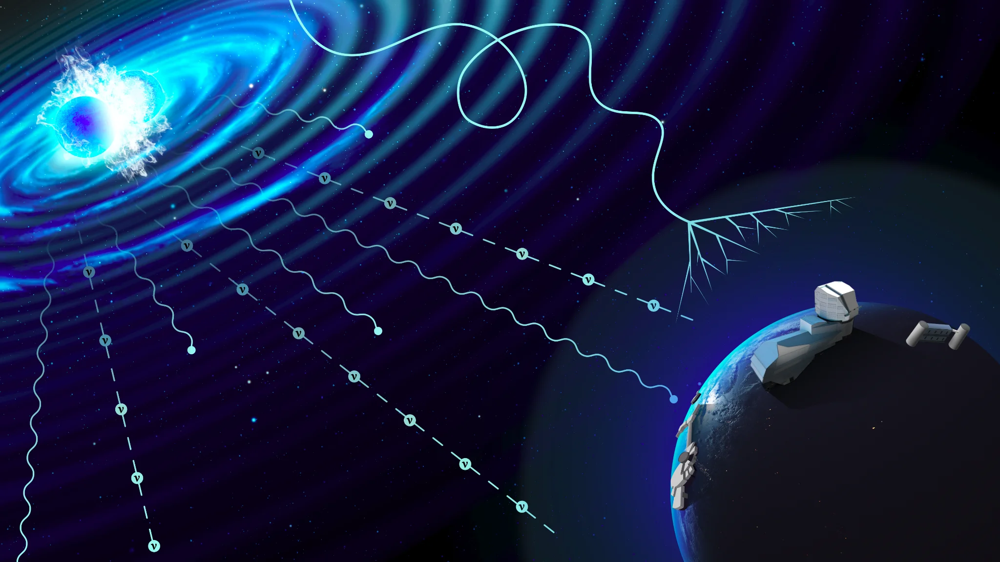
Multi-messenger
Multi-messenger astronomy
Credit: RubinObs/NOIRLab/SLAC/NSF/DOE/AURA/P. Marenfeld
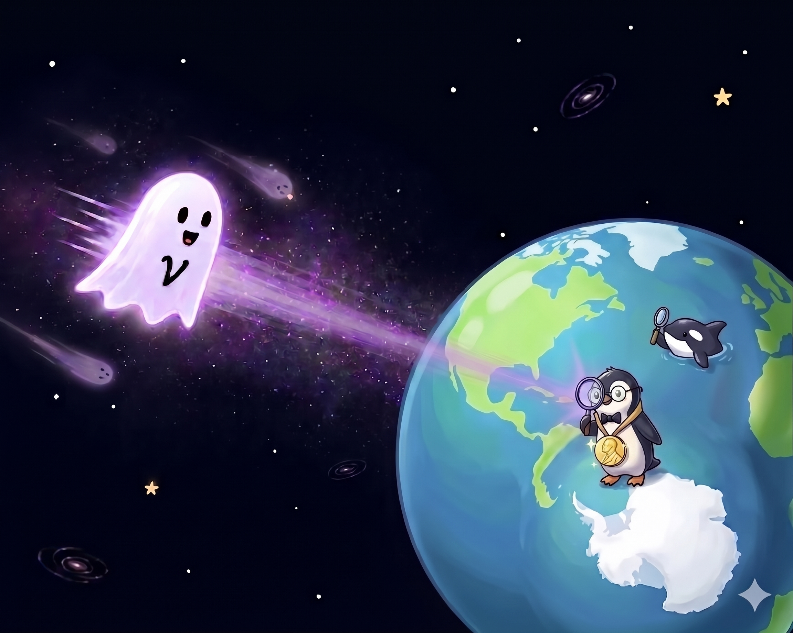
High-energy neutrinos
Chasing ghost particles
Neutral, weakly interacting, and pointing straight back to where they were made
Matthias Vereecken · ACME visit · GSSI · 5
Neutrinos · The big picture
The neutrino spectrum, from the Big Bang to EeV
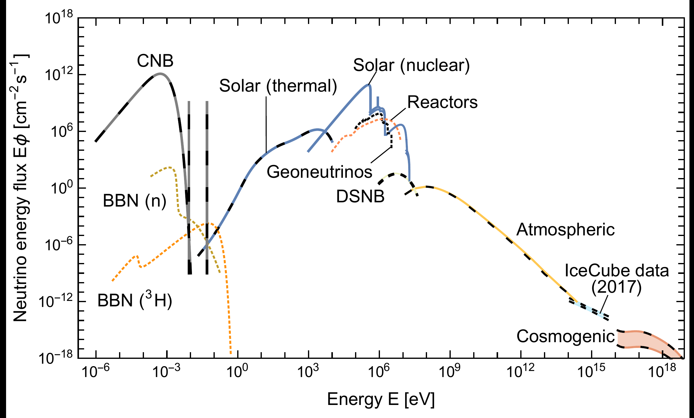
meV
Cosmic neutrino background
MeV
Sun, supernovae, reactors, Earth
GeV – TeV
Atmospheric neutrinos
TeV – PeV
Astrophysical: this talk
EeV
Cosmogenic (from UHECRs)
E. Vitagliano, I. Tamborra & G. Raffelt, Rev. Mod. Phys. 92, 045006 (2020)
Matthias Vereecken · ACME visit · GSSI · 6
Cosmic rays
Cosmic rays reach 10
20
eV, but their sources hide
Matthias Vereecken · ACME visit · GSSI · 7
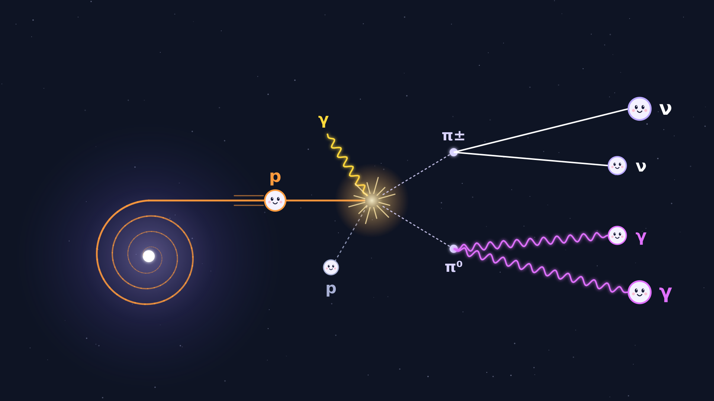
Cosmic rays · Neutrino production
Accelerated protons make neutrinos at the source
p + γ / p + p → π±, π0 · π± → μ ν → e + 3ν · π0 → γγ
Matthias Vereecken · ACME visit · GSSI · 8
High-energy neutrinos · IceCube
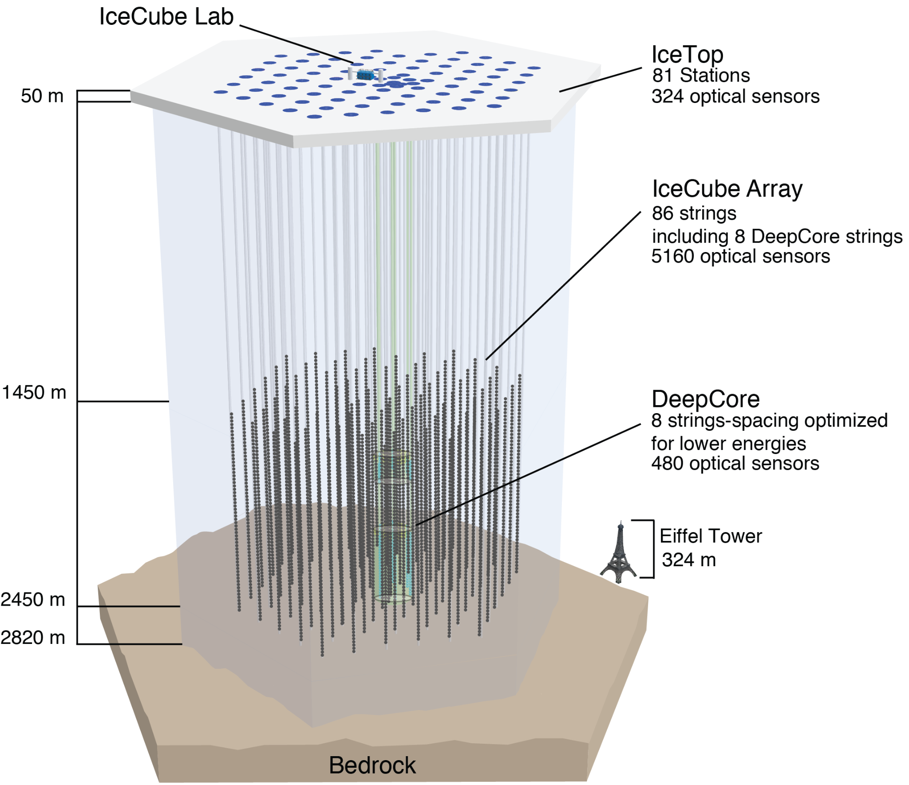
Credit: IceCube Collaboration
IceCube: an always-on, all-sky neutrino telescope
1 km³
of instrumented ice at the South Pole
5,160
optical sensors on 86 strings
1.5–2.5 km
deep, below the surface
~100%
uptime, whole sky at once
Matthias Vereecken · ACME visit · GSSI · 9
High-energy neutrinos · Detection
How IceCube sees a neutrino
Matthias Vereecken · ACME visit · GSSI · 10
High-energy neutrinos · Background
1 ms of IceCube data
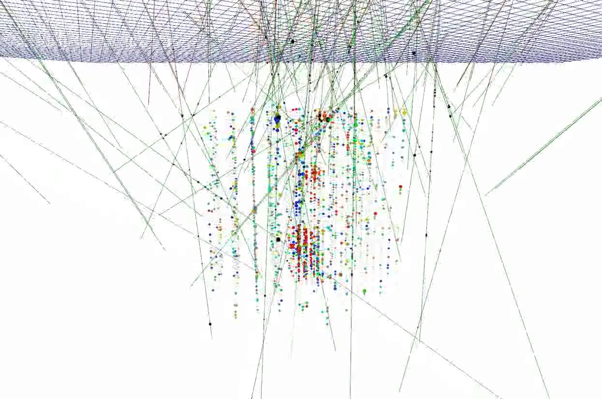
Matthias Vereecken · ACME visit · GSSI · 11
![What IceCube records: cosmic rays above the South Pole make atmospheric muons that reach IceCube from above, while muons from the northern sky are stopped by the Earth; atmospheric neutrinos arrive from all directions and astrophysical neutrinos from distant sources cross the Earth. Events per year on a log scale: about 70 billion atmospheric muons (about 2,000 per second, the trigger rate), more than 100,000 atmospheric neutrinos (one every few minutes), and about 10 to 100 astrophysical neutrinos depending on the selection: HESE above 60 TeV, about 8 per year, 75% astrophysical; MESE above 1 TeV, about 95 astrophysical per year, only 12% of the sample](assets/c22f1a95e993b70a39301c2a6e00b2af.png)
![Animation: 11 years of IceCube muon tracks on a sky map (IceTracks-DR2, IC86 2011–2022), with the horizon, the Milky Way, TXS 0506+056, NGC 1068 and IceCube alerts; as the muon-energy threshold rises the down-going atmospheric muons disappear and the astrophysical fraction of up-going events grows, shown next to the astrophysical flux fits. At a threshold of 296 TeV: 8.5 events per day over the whole sky, 33,267 events in 11 years, astrophysical fraction of up-going events 91% for the Northern-tracks fit and 77% for tracks plus cascades, compared with the Bronze and Gold alert thresholds](assets/eeb2a198fc1bcdc9634d12896ec8dbb9.jpg)
High-energy neutrinos · Real-time alerts
IceCube real-time alerts: ~30 a year
Single high-energy tracks: well pointed and likely astrophysical
Public GCN notice within about a minute; refined direction hours later
Signalness: the probability that an event is astrophysical
IceCube-170922A led to the flaring blazar TXS 0506+056
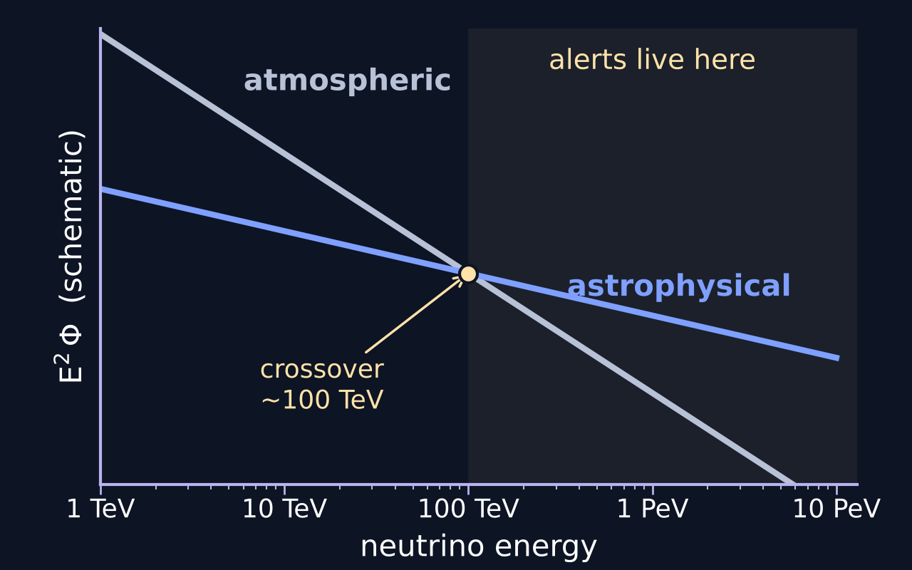
Gold
> 50%
astrophysical
~10
alerts / year
Bronze
> 30%
astrophysical
~20
alerts / year
Cascade
3–30°
error radius (90%)
~8
alerts / year
R. Abbasi et al. (IceCube), arXiv:2304.01174 (2023)
Matthias Vereecken · ACME visit · GSSI · 14
High-energy neutrinos · Diffuse flux
The diffuse flux is not a single power law
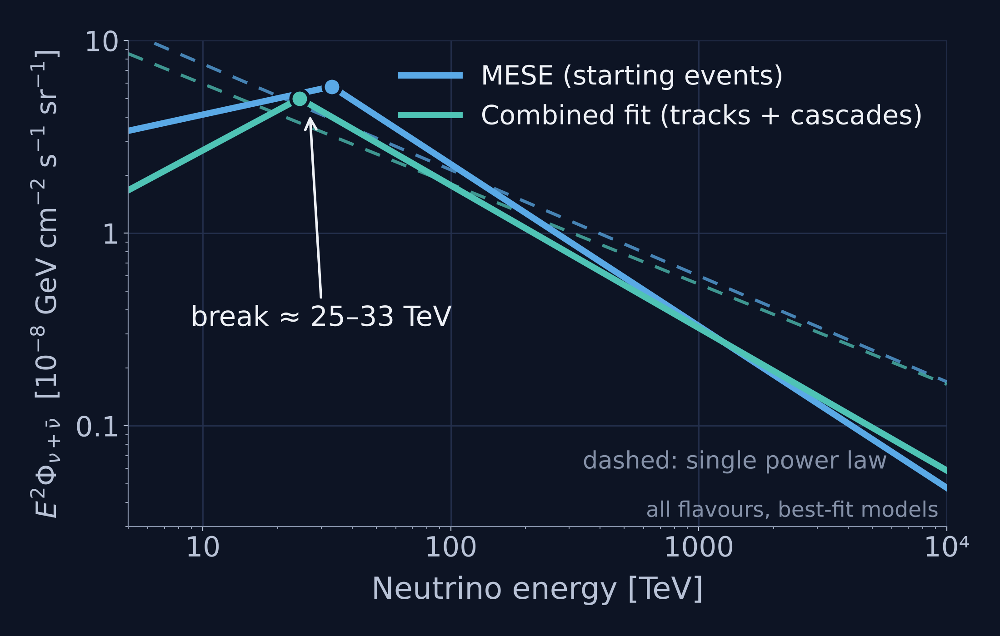
> 4σ
single power law rejected, in two independent analyses
~30 TeV
spectral break: index γ ≈ 1.5 below, γ ≈ 2.8 above
MESE: starting events down to ~1 TeV
Combined fit: through-going tracks + cascades
R. Abbasi et al. (IceCube), PRL 136, 121002 (2026)
Matthias Vereecken · ACME visit · GSSI · 15
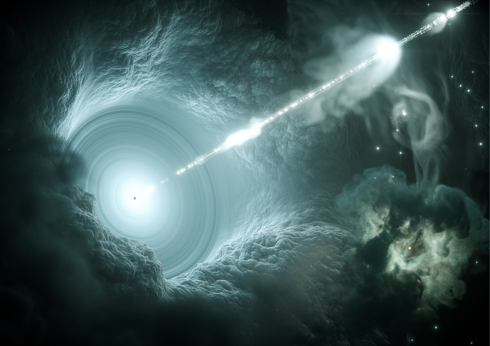
Neutrino sources
Identifying the sources
Credit: DESY, Science Communication Lab
Neutrino sources · Energy budget
Gamma rays, neutrinos and cosmic rays
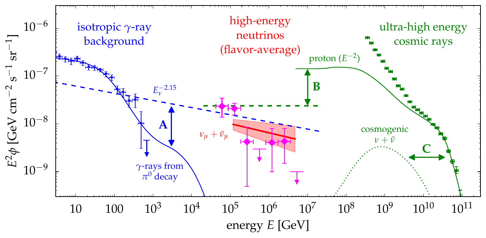
[Ackermann et al., 2019; Ahlers, 2019]
Matthias Vereecken · ACME visit · GSSI · 17
Neutrino sources · Populations
Which source populations can make the diffuse flux?
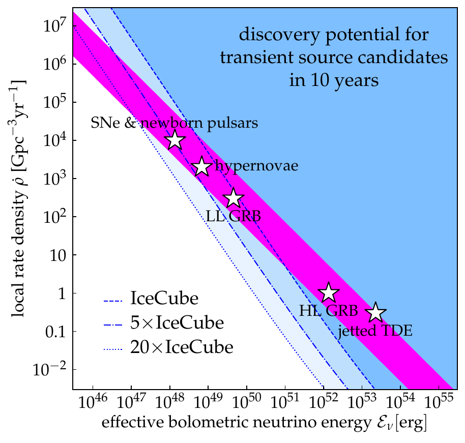
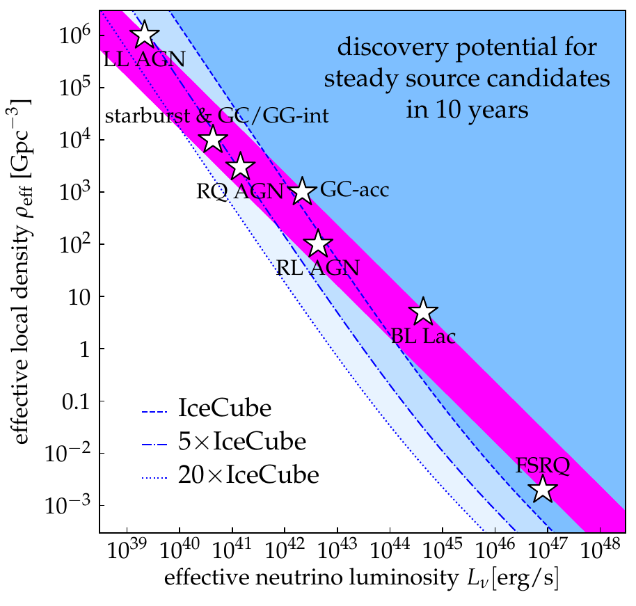
M. Ackermann et al., BAAS 51(3), 185 (2019) · K. Murase & E. Waxman, PRD 94, 103006 (2016)
Matthias Vereecken · ACME visit · GSSI · 18
Neutrino sources · NGC 1068
NGC 1068
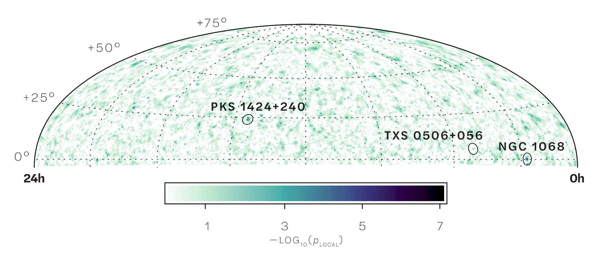
Nearby Seyfert galaxy (~14 Mpc), 10 years of muon tracks
ν flux ≫ TeV γ-ray flux: γ rays absorbed near the core
4.2σ
79 (+22/−20) neutrinos above the atmospheric background
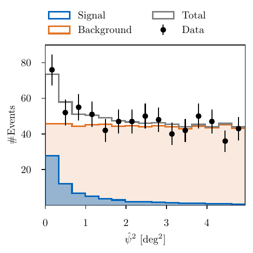
R. Abbasi et al. (IceCube), Science 378, 538 (2022)
Matthias Vereecken · ACME visit · GSSI · 19

Neutrino sources · TXS 0506+056
TXS 0506+056
Credit: DESY, Science Communication Lab
Matthias Vereecken · ACME visit · GSSI · 21
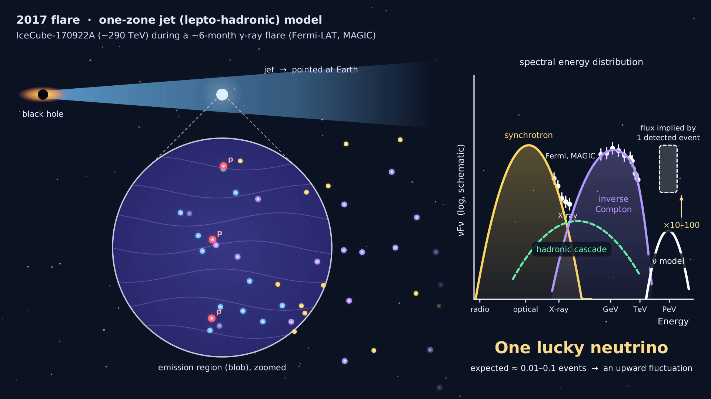
Keivani+ 2018 · Gao+ 2019 · Cerruti+ 2019 · Murase+ 2018 · Strotjohann+ 2019
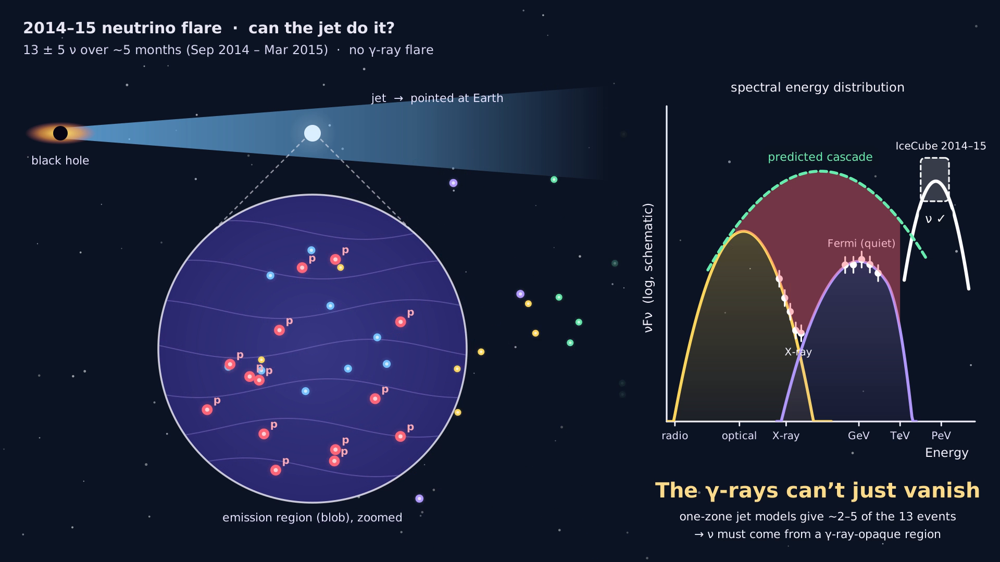
Reimer+ 2019 · Rodrigues+ 2019 · Petropoulou+ 2020 · Xue+ 2019 · Zhang+ 2020

Zathul+ 2025 · Fiorillo+ 2025 · IceCube, PoS(ICRC2023)1465
Neutrino sources · Galactic plane
The Milky Way seen in neutrinos
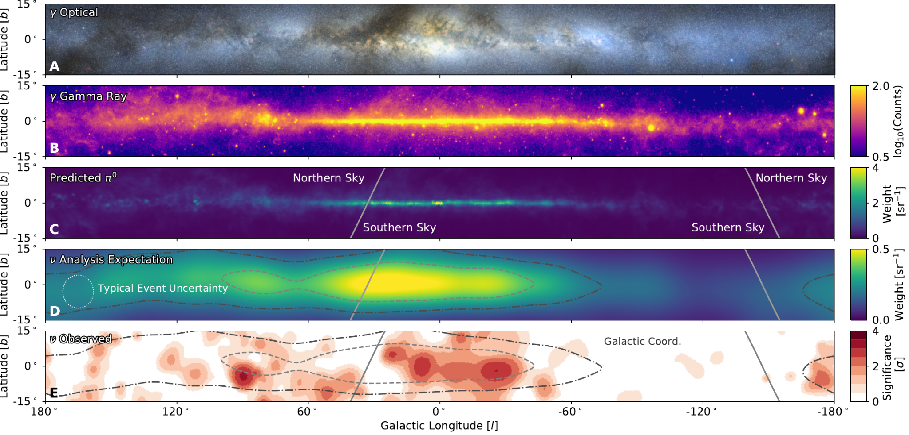
Optical, γ-ray, π⁰ model, expected and observed neutrinos (top to bottom)
4.5σ
diffuse neutrino emission from the Galactic plane
Cascade events: 10 years
Selected with a neural network
Fits π⁰ templates: cosmic rays hitting interstellar gas
R. Abbasi et al. (IceCube), Science 380, 1338 (2023)
Matthias Vereecken · ACME visit · GSSI · 25
Neutrino sources · Tidal disruption events
Tidal disruption events as neutrino sources?
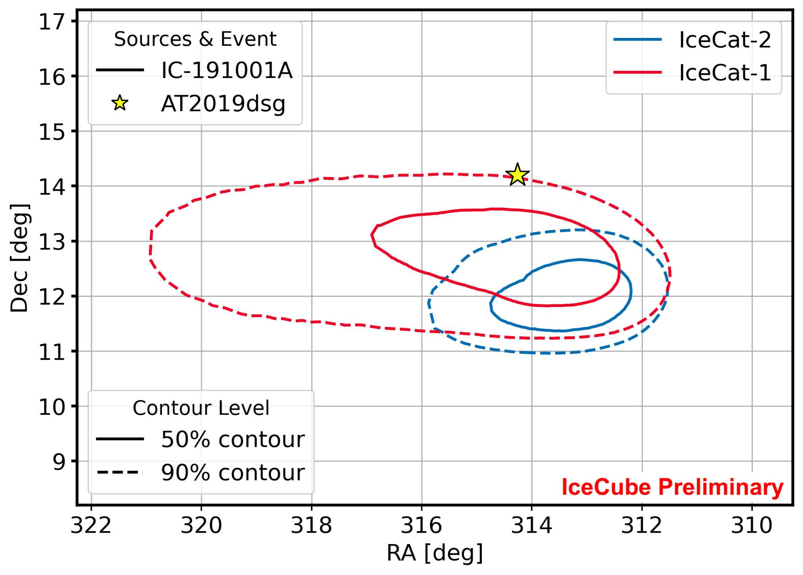
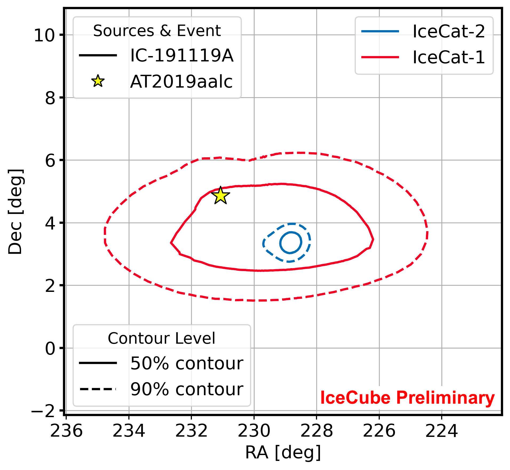
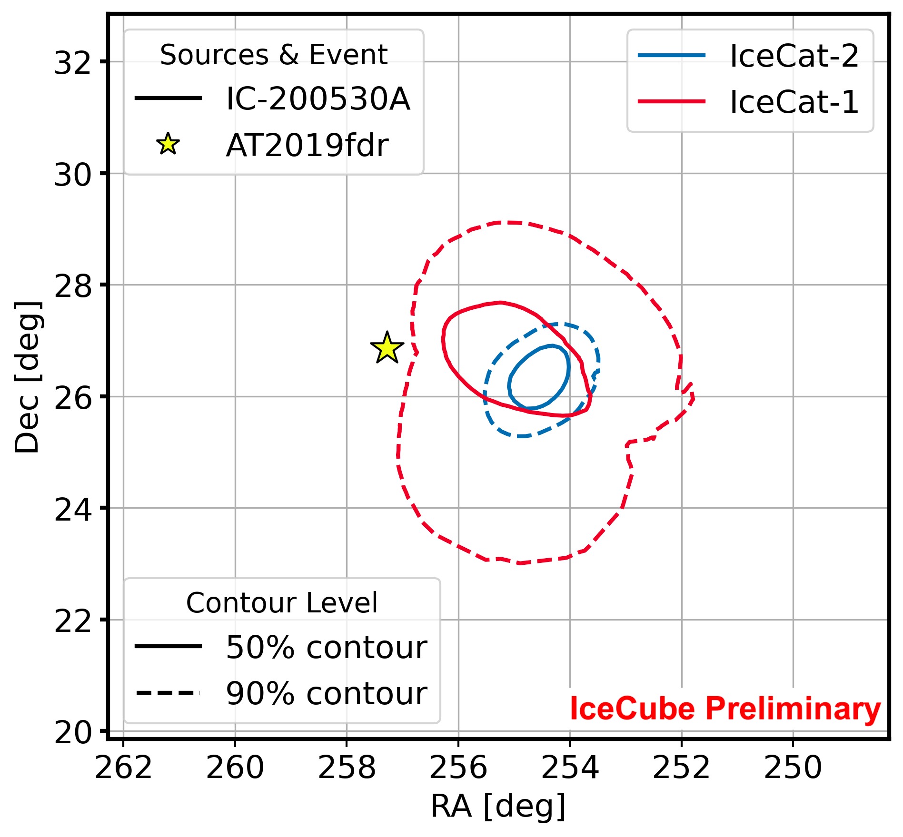
A. Zegarelli et al. (IceCube), IceCat-2, arXiv:2507.06176 (2025)
Matthias Vereecken · ACME visit · GSSI · 26
Neutrino follow-up · Motivation
Why expect neutrinos from compact mergers?
SECONDS
Prompt jet
Protons meet photons in the jet that makes the short GRB
→ ±500 s window
HIDDEN
Choked jet
The jet stalls in the ejecta: no GRB, but neutrinos still escape
→ GWs are the only trigger
DAYS – WEEKS
Remnant
A magnetar wind or late flares energise the ejecta
→ 2-week window
GWs give the time, sky area and distance; neutrinos are the clean tracer of accelerated hadrons
Expected signals are weak: only nearby, well-aligned mergers are in reach, so we also stack and use sub-threshold events
Matthias Vereecken · ACME visit · GSSI · 27
Neutrino follow-up · GRBs
GRBs make at most ~1% of the diffuse neutrinos
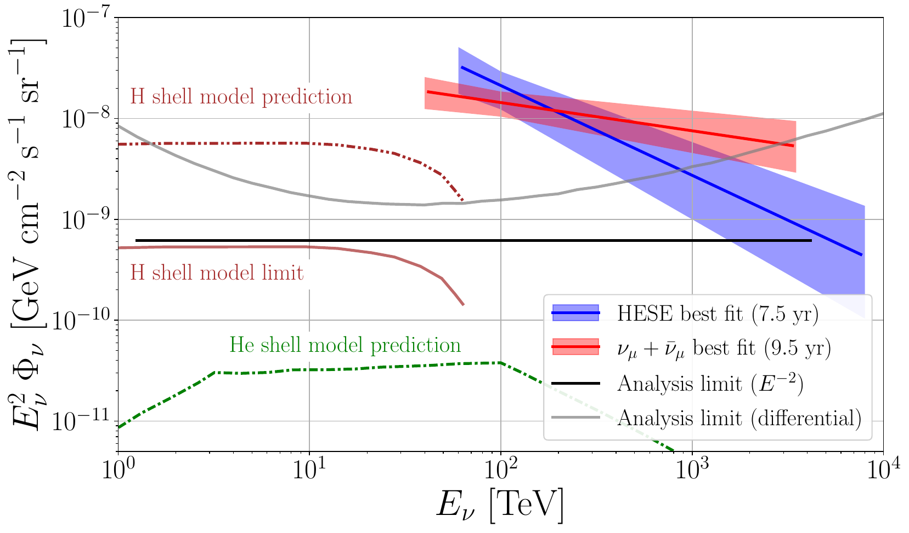
≲ 1%
prompt emission
≲ 24%
extended, up to 10⁴ s
GRBs from 2011 to 2018, time windows up to ±14 days
Classic fireball predictions are excluded
Room left for choked jets and GRBs we don't see in γ rays
R. Abbasi et al. (IceCube), ApJ 937, 109 (2022)
Matthias Vereecken · ACME visit · GSSI · 28
Neutrino follow-up · GRB 221009A
The brightest GRB ever: no neutrinos
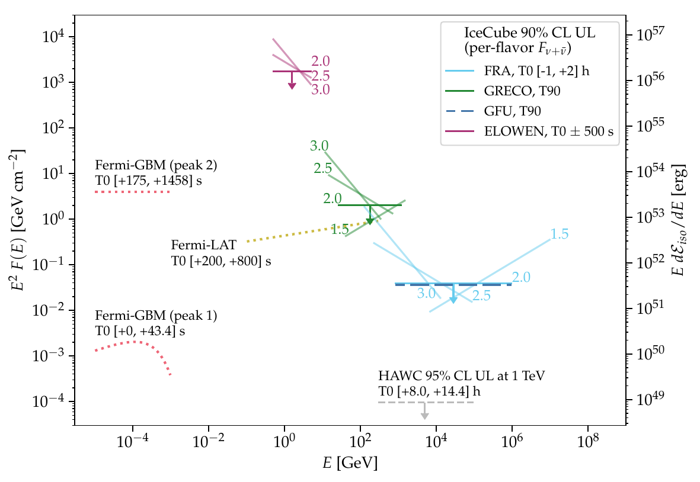
0
neutrinos, from MeV to PeV
The “BOAT”: brightest GRB seen by Fermi-GBM, at z = 0.151
First GRB with photons above 10 TeV (LHAASO)
Limits constrain the jet's baryon loading and Lorentz factor
R. Abbasi et al. (IceCube), ApJL 946, L26 (2023)
Matthias Vereecken · ACME visit · GSSI · 29
Neutrino follow-up · GW170817
GW170817: no neutrinos seen
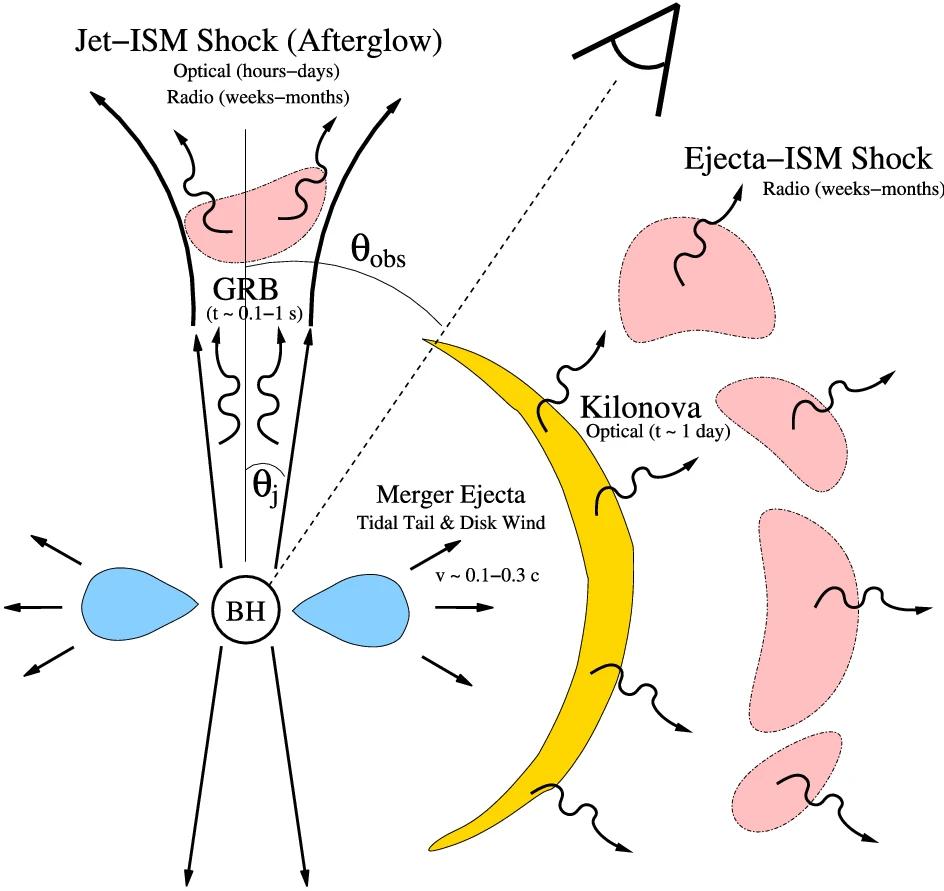
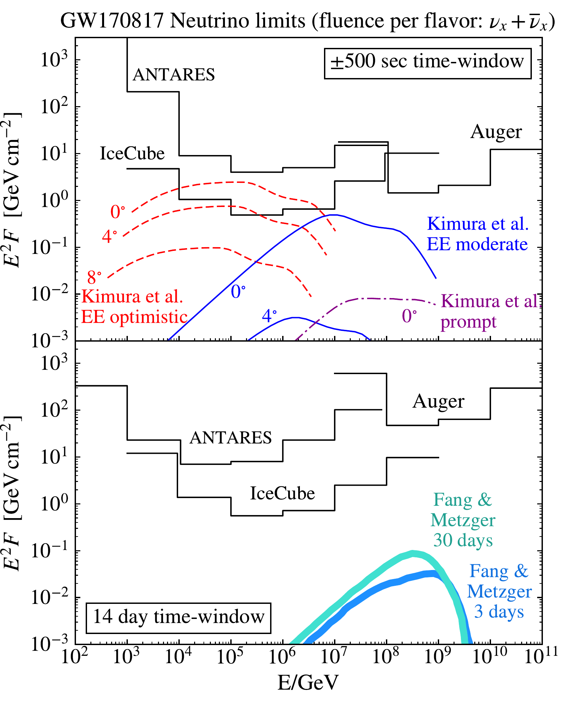
0
coincident neutrinos (ANTARES, IceCube, Auger)
±500 s and 14 days around the merger
Consistent with a jet seen off-axis (θ ≳ 20°)
A. Albert et al., ApJL 850, L35 (2017) · Sketch: Metzger, LRR 23, 1 (2020)
Matthias Vereecken · ACME visit · GSSI · 30
Neutrino follow-up · O3
No neutrinos from O3 GW candidates
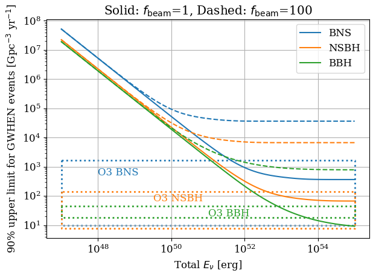
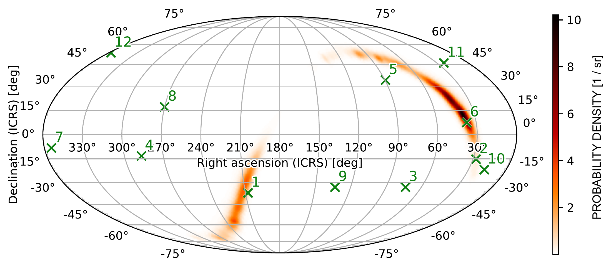
Joint search by IceCube and LVK
LLAMA pipeline: GW + neutrino coincidences
Includes low-confidence GW events
R. Abbasi et al. (IceCube & LVK), ApJ 1003, 41 (2026)
Matthias Vereecken · ACME visit · GSSI · 31
Neutrino follow-up · O4a
1,030 O4a alerts: no neutrino counterpart
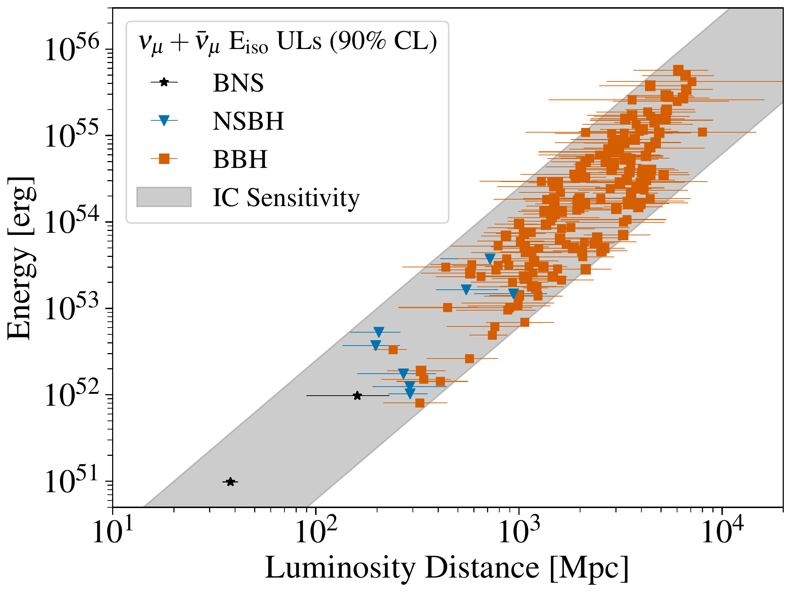
1,030
O4a GW alerts followed up: 85 significant + 945 low-significance
±500 s around each merger; 2 weeks for NSBH candidates
Automated notices speed up the response
Limits for ~2× more sources than all previous runs
R. Abbasi et al. (IceCube), arXiv:2606.13762 (2026)
Matthias Vereecken · ACME visit · GSSI · 32
Neutrino telescopes · KM3NeT
KM3NeT: neutrino telescopes in the Mediterranean
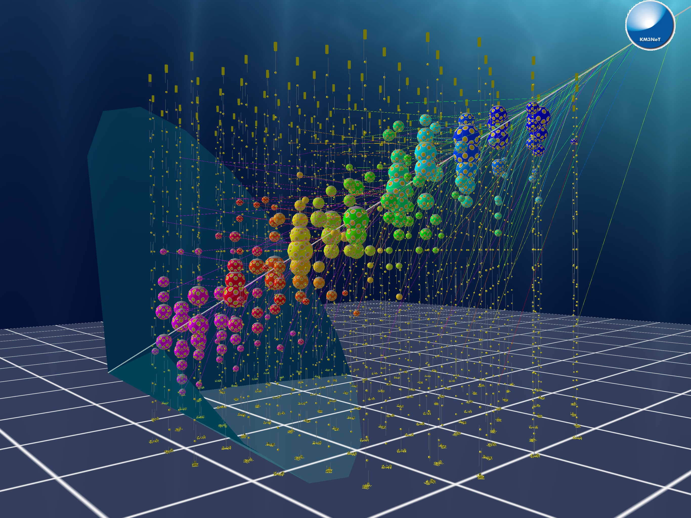
Event display. Credit: KM3NeT Collaboration
ARCA
off Sicily, ~3.5 km deep: astronomy
ORCA
off Toulon, ~2.5 km deep: oscillations
Sea water: less light scattering than ice, sharper directions
Up-going tracks see the southern sky and Galactic centre
Matthias Vereecken · ACME visit · GSSI · 33
Neutrino telescopes · KM3-230213A
KM3-230213A: the most energetic neutrino yet
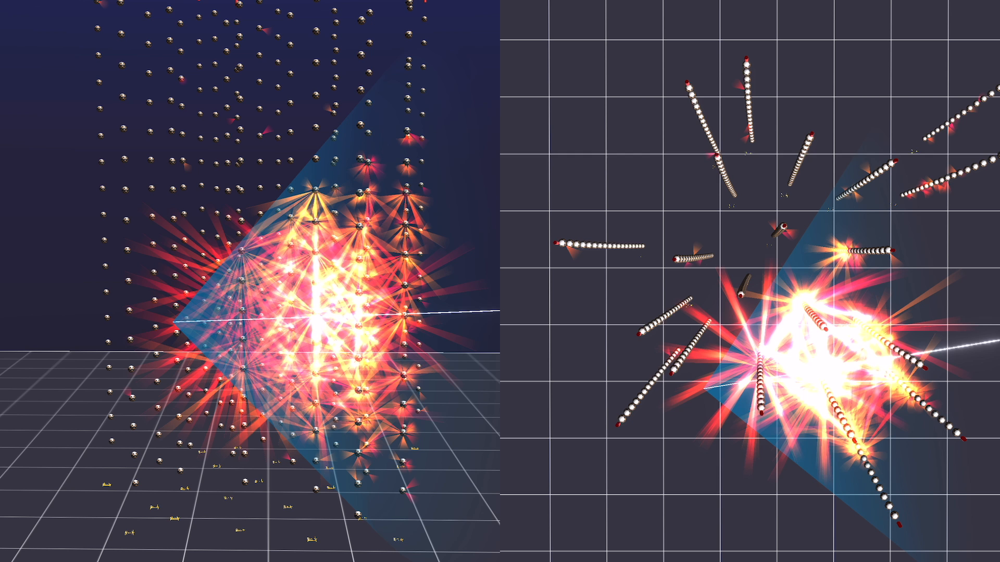
~220 PeV
estimated neutrino energy
A nearly horizontal ~120 PeV muon, 13 Feb 2023
Seen by ARCA with only 21 lines
Some tension with IceCube and Auger limits; origin still open
KM3NeT Collaboration, Nature 638, 376 (2025)
Matthias Vereecken · ACME visit · GSSI · 34
Neutrino telescopes · KM3-230213A
Where did KM3-230213A come from?
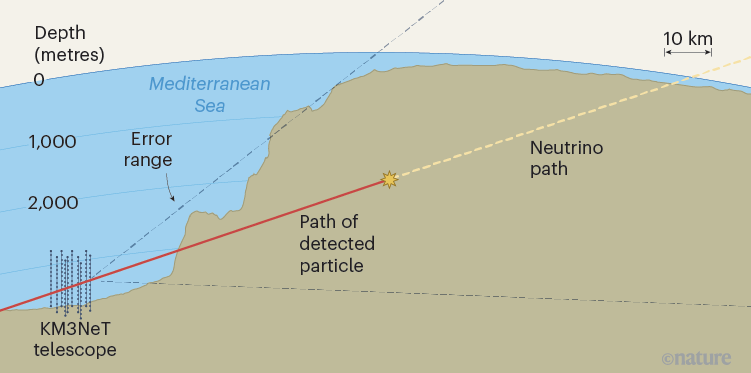
Nearly horizontal, through rock and sea: no atmospheric muon gets that far
12 candidate blazars in the 99% region; no clear counterpart
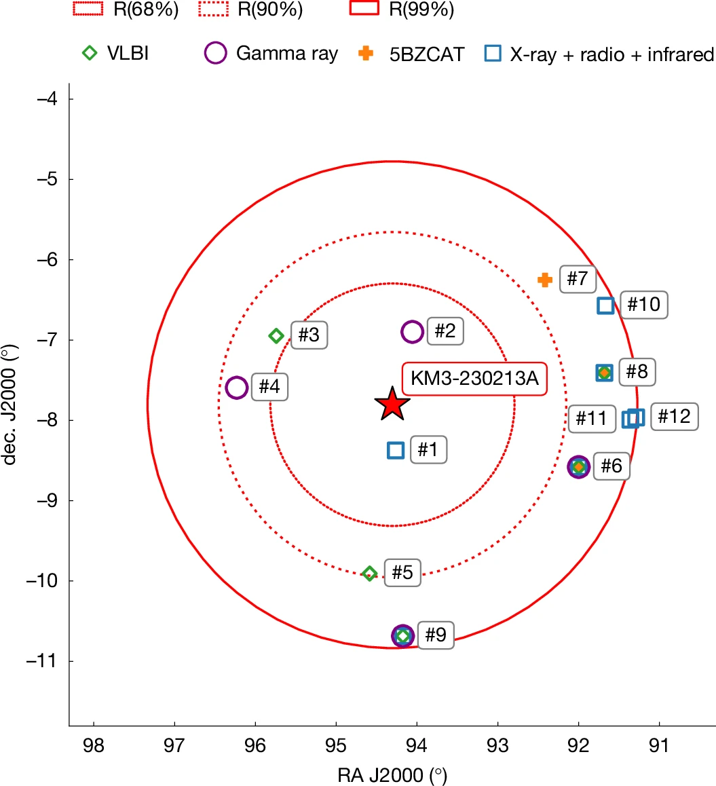
KM3NeT Collaboration, Nature 638, 376 (2025) · Graphic: Nature
Matthias Vereecken · ACME visit · GSSI · 35
Neutrino telescopes · KM3-230213A
KM3-230213A on the neutrino spectrum
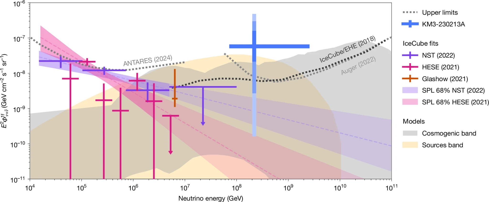
KM3NeT Collaboration, Nature 638, 376 (2025)
Matthias Vereecken · ACME visit · GSSI · 36
Neutrino telescopes · KM3-230213A + IceCube + Auger
Fit together with IceCube and Auger: 2.5–3σ tension
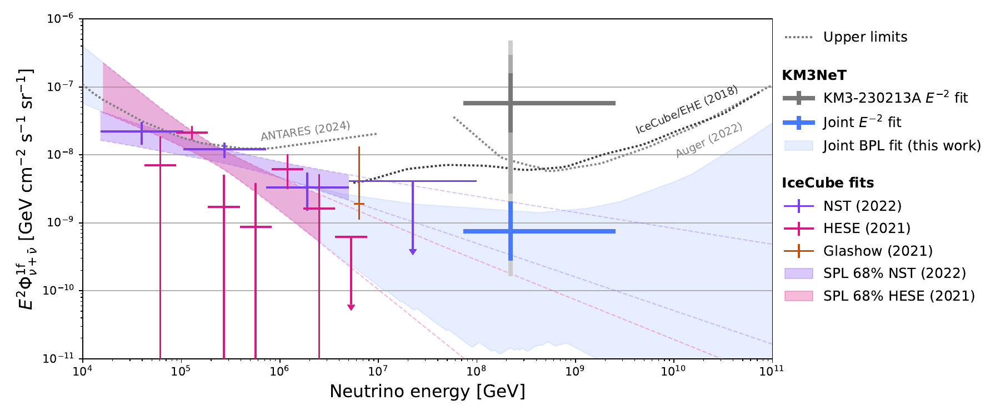
KM3NeT Collaboration, arXiv:2502.08173 (2025)
Matthias Vereecken · ACME visit · GSSI · 37
Targeted searches · O3–O4
Targeted GW searches
Matthias Vereecken · ACME visit · GSSI · 38
Targeted searches · O3–O4
Targeted searches
Using sky location and time to get ~20% more reach
Triggers
Gamma-ray bursts
Kilonovae
Magnetars
Fast radio bursts
High-energy neutrinos
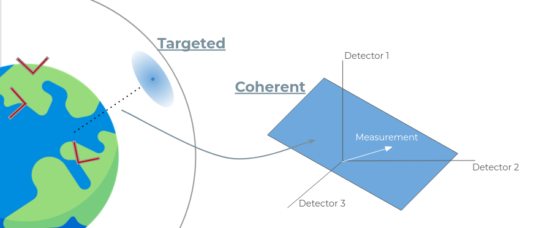
Targeted: known time and sky position · Coherent: data from different detectors combined with correct antenna pattern
Matthias Vereecken · ACME visit · GSSI · 39
Matthias Vereecken · ACME visit · GSSI · 40
Targeted searches · O3–O4
Matched filter & unmodelled search
PyGRB
Matched filtering
Time window
[−5, +1] s
Signals
BNS / NSBH
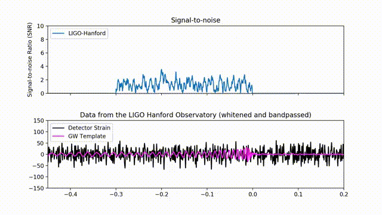
X-pipeline
Unmodelled
Time window
[−500, +500] s
Signals
Burst-like or BNS / NSBH
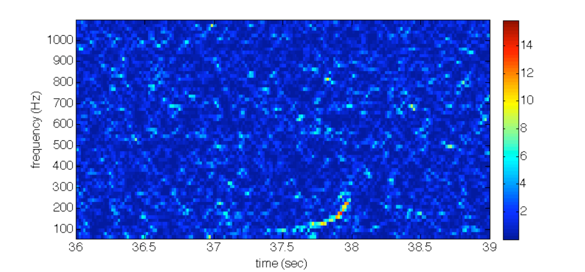
Targeted searches · Neutrino alerts
O3: no GW transients around 23 IceCube alerts
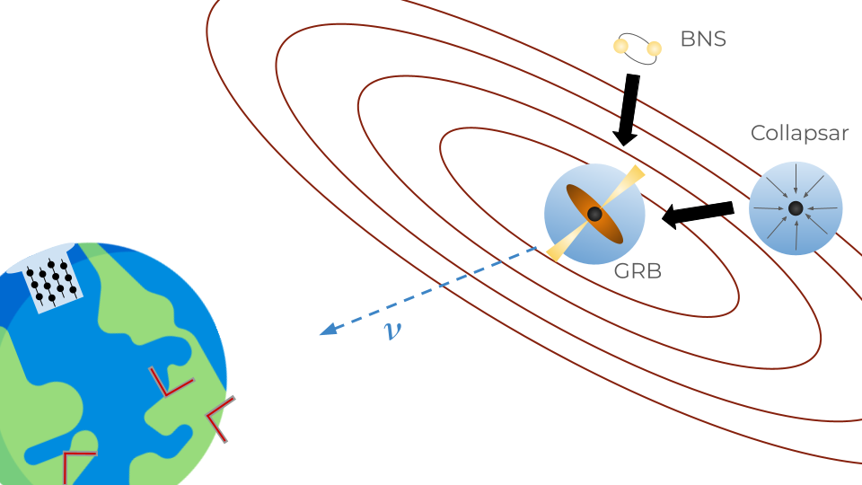
O3 GW follow-up
23
alerts searched
0
GW transients found
8 Gold + 15 Bronze alerts during O3a and O3b
Unmodelled X-Pipeline search for generic GW transients
90% exclusion: 30–60 Mpc BNS-like, 70–140 Mpc NSBH-like
M. Vereecken et al., arXiv:2607.28539 (2026)
Matthias Vereecken · ACME visit · GSSI · 41
Targeted searches · Neutrino alerts
O4 targeted search for GWs from IceCube neutrinos
1
Gold and Bronze alerts
The public track alerts, as in O3
2
Lower purity
Extend the selection below Bronze: more alerts, lower signalness
3
Cascade alerts
All-flavour showers, usable thanks to improved reconstruction
4
Hierarchical Bayesian analysis
Combine all alerts to constrain the merger population
From an upper limit per alert to a constraint on the population
Matthias Vereecken · ACME visit · GSSI · 42
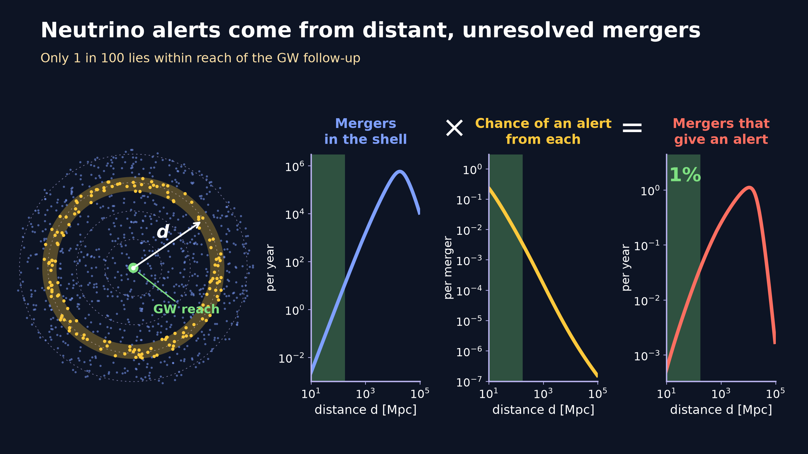
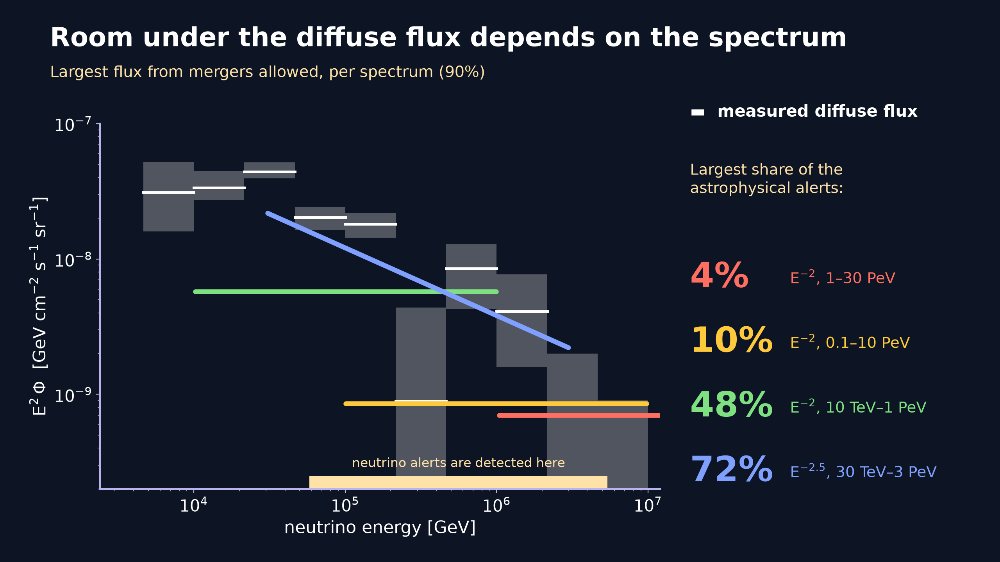
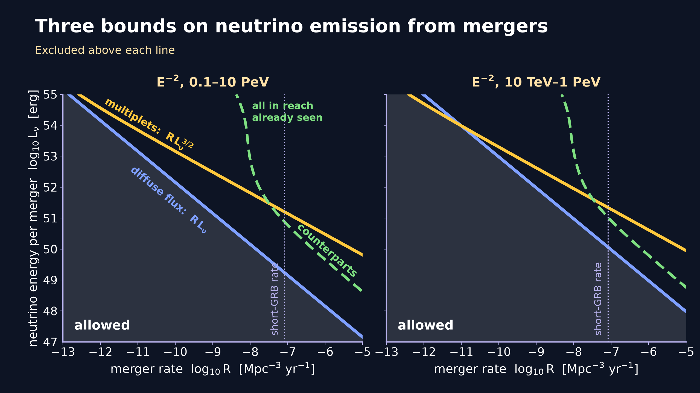
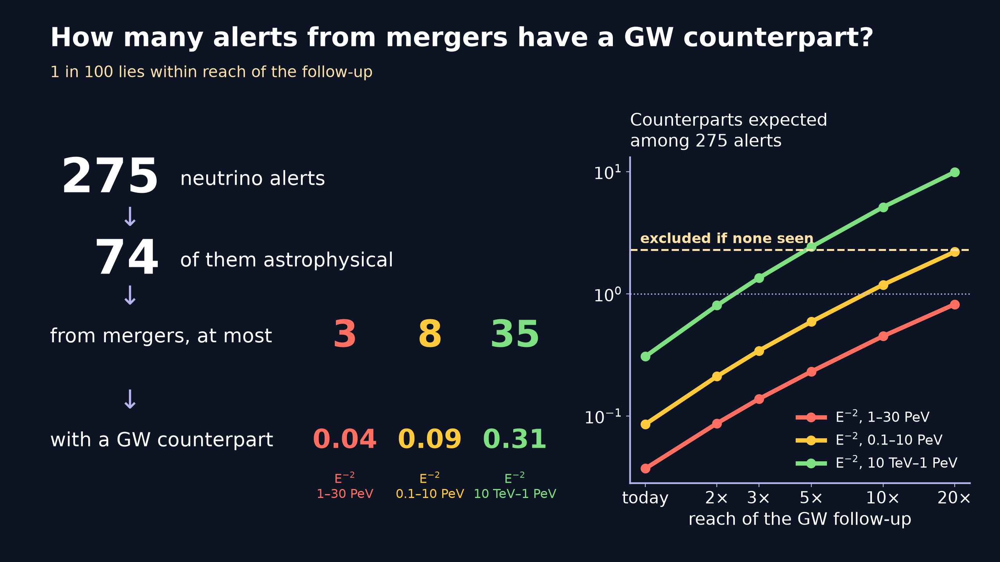
Merger neutrinos · Population inference
Hierarchical Bayesian inference of the population
Population: three components
Atmospheric
∫ dθatm · air-shower background
Steady astrophysical
∫ dθastro · the diffuse flux
Mergers
∫ dθmerger · the GW sources we test
I. Mandel, W. M. Farr & J. R. Gair, MNRAS 486, 1086 (2019)
Matthias Vereecken · ACME visit · GSSI · 47
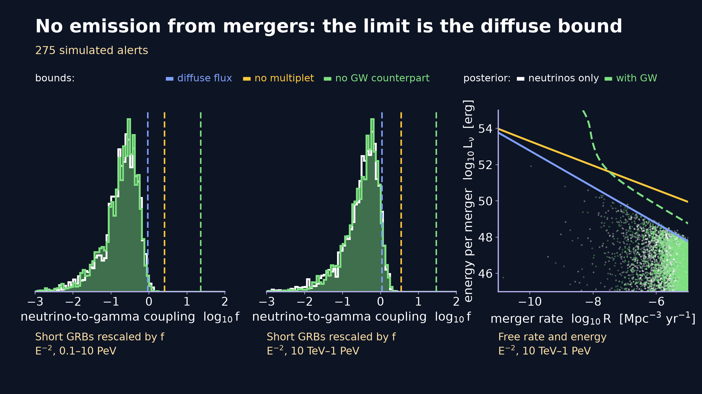
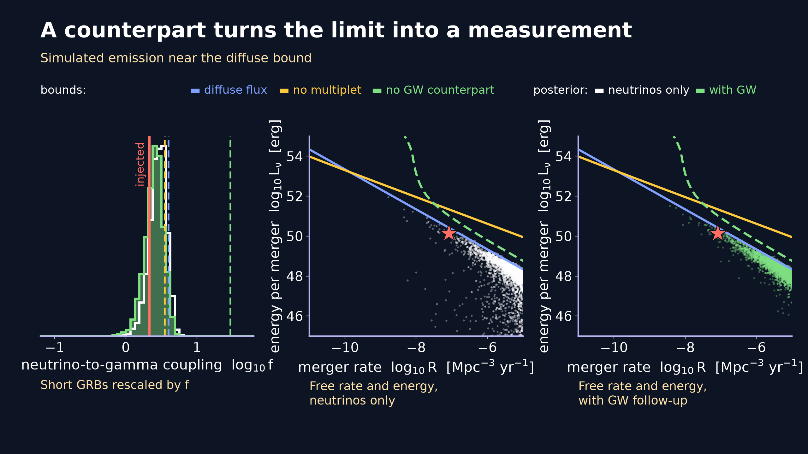
Future telescopes
IceCube-Gen2
Matthias Vereecken · ACME visit · GSSI · 50
Future telescopes · IceCube Upgrade
IceCube Upgrade
Matthias Vereecken · ACME visit · GSSI · 51
Future telescopes
A global neutrino network

L. Schumacher et al., PRD 112, 083027 (2025)
Matthias Vereecken · ACME visit · GSSI · 52
To be
continued...
Backup · Background
~10 cosmic neutrinos a year among 6 × 10¹⁰ muons
Credit: Markus Ahlers
Matthias Vereecken · ACME visit · GSSI · 54
Backup · Neutrino sky
High-energy neutrinos?
An isotropic neutrino sky, sources mostly unknown
Credit: arXiv:1903.04334
Matthias Vereecken · ACME visit · GSSI · 56
17
GRBs with a modeled BNS/NSBH search
86
GRBs with a generic transient search
Targeted searches · O3–O4
Short and long GRBs: no GWs from 108 O3b bursts
Binary neutron stars
→ short GRBs (≲ 2 s)
Collapsars
→ long GRBs (≳ 2 s)
Fermi + Swift GRBs from O3b: no GW counterpart
Median BNS exclusion distance ~100–200 Mpc
R. Abbott et al. (LVK), ApJ 928, 186 (2022) · Animations: NASA GSFC
Matthias Vereecken · ACME visit · GSSI · 57
Targeted searches · O3–O4
Magnetar flares: E_GW ≲ 10⁴³–10⁴⁶ erg
R. Abbott et al. (LIGO-Virgo-KAGRA Collaboration), Astrophys. J. 966, 137 (2024)
Matthias Vereecken · ACME visit · GSSI · 58
R. Abbott et al. (LIGO-Virgo-KAGRA & CHIME/FRB Collaborations), Astrophys. J. 955, 155 (2023)
Matthias Vereecken · ACME visit · GSSI · 59
Targeted searches · O3–O4
No GWs from CHIME fast radio bursts in O3a
Searched for both CBC (modeled) and generic burst transients
No GW counterpart to any CHIME FRB in O3a
Targeted searches · O3–O4
SGR 1935+2154: no GWs in GEO600
MeerKAT: the magnetar inside its supernova remnant
CHIME: FRB-like bursts from SGR 1935+2154
A. G. Abac et al. (LIGO-Virgo-KAGRA Collaboration), Astrophys. J. 977, 255 (2024) · CHIME/FRB Collab., Nature 587, 54 (2020) · MeerKAT: arXiv:2103.06052
Matthias Vereecken · ACME visit · GSSI · 60
Cosmic rays · Waxman–Bahcall bound
Cosmic rays set the scale of the neutrino flux
0.5 × 10⁴⁴
erg Mpc⁻³ yr⁻¹: energy put into cosmic rays above 10¹⁹ eV
≤ 100%
of the proton energy goes to pions, if the protons still escape
3.4 × 10⁻⁸
GeV cm⁻² s⁻¹ sr⁻¹: upper bound on E²Φ, all flavours
IceCube, 2013
3.6 ± 1.2 × 10⁻⁸
The measured flux sits right at the bound: a common origin with the highest-energy cosmic rays?
The same reasoning predicted neutrinos from GRB fireballs (Waxman & Bahcall 1997)
E. Waxman & J. Bahcall, PRD 59, 023002 (1999) · E. Waxman, arXiv:1312.0558
Matthias Vereecken · ACME visit · GSSI · 61
Outlook · Neutrino telescopes
Next: bigger telescopes, one global network
IceCube-Gen2
SOUTH POLE
~8 km³ optical array plus a radio array for EeV neutrinos
P-ONE
PACIFIC OCEAN
Off Vancouver Island, on Ocean Networks Canada's deep-sea infrastructure
KM3NeT
MEDITERRANEAN
ARCA growing towards its full ~1 km³
Baikal-GVD
LAKE BAIKAL
Freshwater telescope, operating and expanding
Global Neutrino Network
4π, 24/7
Telescopes in ice and water on both hemispheres: joint alerts and analyses, ready for GW follow-up in O5
More proposed: TRIDENT and HUNT in China
Matthias Vereecken · ACME visit · GSSI · 62
GWTC-5.0 · May 2026
GWTC-5.0: the catalog update with O4b
+161 O4b candidates → 390 events in total · loudest yet: GW250114 (SNR > 75)
A. G. Abac et al. (LIGO-Virgo-KAGRA Collaboration), arXiv:2605.27225 (2026)
Matthias Vereecken · ACME visit · GSSI · 64
GW170817 · 2017
No post-merger signal yet
B. P. Abbott et al. (LIGO-Virgo Collaboration), Astrophys. J. Lett. 851, L16 (2017)
Matthias Vereecken · ACME visit · GSSI · 65
Backup · GW170817
Enough ejecta for a kilonova and r-process
B. P. Abbott et al. (LIGO-Virgo Collaboration), Astrophys. J. Lett. 850, L39 (2017)
Matthias Vereecken · ACME visit · GSSI · 66
Backup · Sub-solar
TROVE: 456 candidates, no counterpart
N. Vieira et al., Astrophys. J. 1007, 116 (2026)
Matthias Vereecken · ACME visit · GSSI · 67
Backup · Sub-solar
SN 2025ulz radio: a supernova, not a jet
T. O'Dwyer et al., arXiv:2604.05128 (2026)
Matthias Vereecken · ACME visit · GSSI · 68
Backup · GWTC-5.0
GWTC-5.0: 390 compact binary mergers
A. G. Abac et al. (LIGO-Virgo-KAGRA Collaboration), arXiv:2605.27223 (2026)
Matthias Vereecken · ACME visit · GSSI · 69
Backup · GWTC-5.0
Backup: black hole spins
A. G. Abac et al. (LIGO-Virgo-KAGRA Collaboration), arXiv:2605.27226 (2026)
Matthias Vereecken · ACME visit · GSSI · 70
Backup · Gamma-ray bursts
Short and long gamma-ray burst
Binary neutron stars
→ short GRBs (≲ 2 s)
Collapsars
→ long GRBs (≳ 2 s)
Credit: NASA's Goddard Space Flight Center
Credit: NASA's Goddard Space Flight Center
Matthias Vereecken · ACME visit · GSSI · 71
O4
Rare O4 candidates
Gamma-ray coincidences, neutron-star containing events, and sub-solar-mass candidates
Matthias Vereecken · ACME visit · GSSI · 72
O4 events of interest
Alerts involving a neutron star
Events of interest in O4
GW230529
O4a
Probably neutron star–black hole, mass-gap component
No counterpart found
S250206dm
O4c
Terrestrial, binary neutron star or neutron star–black hole
No counterparts found
S250818k
O4c
Low-confidence Binary neutron star, likely sub-solar mass component
Counterpart found: SN 2025ulz, likely unrelated
GW230529: Abac+, ApJL 970, L34 (2024) · GCN 39175 · GraceDB S250818k · Metzger+ 2024
Matthias Vereecken · ACME visit · GSSI · 73
O4 events of interest
Coincidences and exotic candidates
Events of interest in O4
S241125n
O4b
BBH (or terrestrial) + sub-threshold Swift trigger
RAVEN joint FAR ~1 per 1000 yr
With the BBH rate folded in: ~1 per 6 yr
A BBH in an AGN disk making a GRB?
S250223dk
O4c
Likely terrestrial (92%) or BBH (8%) + sub-threshold Swift trigger
Timing-only joint FAR ~1 per month
No confident counterpart
S251112cm
O4c
Sub-solar-mass candidate, FAR 1 per 6 yr
Found by the sub-solar-mass search
Follow-up incl. the Vera C. Rubin Observatory
GCN 38315, 38356 · arXiv:2505.10395 · GCN 39443 · GCN 43257
Matthias Vereecken · ACME visit · GSSI · 74
O4 events of interest
S250818k: a sub-solar alert, with AT2025ulz in its skymap
Low-confidence candidate
HasSSM > 99%: lighter object below 1 M⊙
Chirp mass 0.1–0.87 M⊙
HasNS 80% · HasRemnant 80%
949 deg² (90%) · 237 ± 62 Mpc
GraceDB: S250818k · Y.-H. Yang et al., arXiv:2510.18854 (2026)
Matthias Vereecken · ACME visit · GSSI · 75
O4 events of interest
SN 2025ulz: kilonova-like at first; later identified as supernova
First 4 days: a kilonova fits
Up to 70 days: it rebrightens
K. Ackley et al., arXiv:2605.02639 (2026)
Matthias Vereecken · ACME visit · GSSI · 76
O4 events of interest
Sub-solar neutron stars from collapsar disks?
Collapsar disks fragment into sub-solar neutron stars that merge inside the star: a "superkilonova"
An astrophysical alternative to primordial black holes for sub-solar alerts
B. D. Metzger et al., Astrophys. J. Lett. 971, L34 (2024)
Matthias Vereecken · ACME visit · GSSI · 77
O4 events of interest
No sub-solar mergers in O4a
A. G. Abac et al. (LIGO-Virgo-KAGRA Collaboration), arXiv:2605.05444 (2026)
Matthias Vereecken · ACME visit · GSSI · 78
O4 events of interest
No sub-solar mergers in O4a
A. G. Abac et al. (LIGO-Virgo-KAGRA Collaboration), arXiv:2605.05444 (2026)
Matthias Vereecken · ACME visit · GSSI · 79
GW170817 · 2017
GW170817: the first neutron star merger in GWs
Component masses 1.17–1.60 M⊙
B. P. Abbott et al. (LIGO-Virgo Collaboration), Phys. Rev. Lett. 119, 161101 (2017)
Matthias Vereecken · ACME visit · GSSI · 80
GW170817 · 2017
Neutron star mergers make short gamma-ray bursts
1.74 s
from merger to the gamma-ray burst
Fermi-GBM + INTEGRAL both saw GRB 170817A
Gravity moves at light speed: |v_GW − c|/c ≲ 10⁻¹⁵
Tight bounds on Lorentz violation
Matthias Vereecken · ACME visit · GSSI · 81
GW170817 · 2017
One merger, the whole EM spectrum
Matthias Vereecken · ACME visit · GSSI · 82
Matthias Vereecken · ACME visit · GSSI · 83
2017
GW170817
1.74 s
from merger to the gamma-ray burst
Neutron star mergers make short GRBs
Gravity moves at light speed: |v_GW − c|/c ≲ 10⁻¹⁵
Tight bounds on Lorentz violation
Animation: NASA Goddard Space Flight Center, Caltech/MIT/LIGO Lab
B. P. Abbott et al. (LIGO-Virgo, Fermi-GBM & INTEGRAL), ApJL 848, L13 (2017)
GW170817 · Background
Credit: Metzger, Living Rev. Relativ. 23, 1 (2020)
GRB, kilonova and afterglow
Credit: Fermi/NASA
Matthias Vereecken · ACME visit · GSSI · 84
Backup · TXS 0506+056 references
TXS 0506+056: the observations
IceCube, Fermi-LAT, MAGIC et al. 2018, Science 361, eaat1378
The ~290 TeV neutrino IC-170922A arrived during a months-long γ-ray flare of TXS 0506+056; the chance of that coincidence is ruled out at about 3σ.
IceCube Collaboration 2018, Science 361, 147
Archival data show an excess of 13 ± 5 neutrinos in 2014–15 (3.5σ), with no γ-ray flare at the time.
Ansoldi et al. (MAGIC) 2018, ApJL 863, L10
Very-high-energy γ rays after the alert; the 2017 flare modelled with protons interacting with external photons in the jet.
IceCube Collaboration, PoS(ICRC2023)1465
With reprocessed data the 2014–15 flare is still there at about 3σ, but with roughly half the original flux.
Kuhlmann & Capel 2025
A Bayesian analysis with physical neutrino spectra still finds TXS 0506+056 among the few blazars plausibly associated with IceCube neutrinos.
arXiv:2503.04632 (accepted Oct 2025; journal volume to be added)
Matthias Vereecken · ACME visit · GSSI · 86
Backup · TXS 0506+056 references
2017: a one-zone jet makes too few neutrinos
Keivani et al. 2018, ApJ 864, 84
Swift and NuSTAR X-rays cap the hadronic cascade: the spectrum is mostly leptonic and the expected neutrino rate is low.
Gao, Fedynitch, Winter & Pohl 2019, Nat. Astron. 3, 88
Time-dependent lepto-hadronic models fit the 2017 spectrum but predict well under one event: IC-170922A needs a fluctuation.
Cerruti et al. 2019, MNRAS 483, L12; erratum MNRAS 502, L21 (2021)
Single-zone lepto-hadronic and proton-synchrotron models of the 2017 flare; the erratum corrects the numbers, so cite both.
Murase, Oikonomou & Petropoulou 2018, ApJ 865, 124
X-ray and γ-ray cascade limits set the maximum neutrino flux of a one-zone blazar: leptonic γ rays with a small hadronic part.
Strotjohann, Kowalski & Franckowiak 2019, A&A 622, L9
The first neutrino seen from a source is typically an upward fluctuation (Eddington bias), so one event does not imply a high flux.
Matthias Vereecken · ACME visit · GSSI · 87
Backup · TXS 0506+056 references
2014–15: why the jet fails
Reimer, Böttcher & Buson 2019, ApJ 881, 46 (+ erratum)
In a one-zone jet, the cascade from the interactions needed for 13 neutrinos far exceeds the observed X-rays and γ rays.
Rodrigues, Gao, Fedynitch, Palladino & Winter 2019, ApJL 874, L29
2017-type lepto-hadronic models applied to 2014–15 give at most about 2–5 events, not 13.
Petropoulou et al. 2020, ApJ 891, 115
Multi-epoch modelling limits the jet to ~0.4–2 muon neutrinos in 10 years: fine for 2017, not for 2014–15.
Xue et al. 2019, ApJ 886, 23
A second zone inside the broad-line region suppresses the X-ray cascade and allows a much higher neutrino flux.
Zhang, Petropoulou, Murase & Oikonomou 2020, ApJ 889, 118
A relativistic “neutral beam” can explain 2014–15, but needs a light composition and a very luminous external photon field.
Halzen, Kheirandish, Weisgarber & Wakely 2019
The 2014–15 burst dominates the source’s neutrino output: it must emit neutrinos more efficiently than γ rays.
arXiv:1811.07439 (journal ref (ApJL 874, L9?) to be checked)
Padovani et al. 2019, MNRAS 484, L104
A “masquerading BL Lac”: really quasar-like, with a hidden broad-line region supplying extra target photons.
Winter et al. 2019, PoS(ICRC2019)1032
Review: no single model explains both the 2017 event and the 2014–15 flare.
Matthias Vereecken · ACME visit · GSSI · 88
Backup · TXS 0506+056 references
A γ-ray-opaque core?
Zathul, Moulai, Fang & Halzen 2025, ApJ 984, 54
By analogy with NGC 1068, the neutrinos may come from a γ-ray-opaque region near the core rather than from the jet.
Fiorillo, Testagrossa, Petropoulou & Winter 2025, ApJ 986, 104
The counterpoint: a realistic corona in TXS 0506+056 makes too few neutrinos to explain IceCube’s signal.
IceCube Collaboration 2022, Science 378, 538
About 79 neutrinos from NGC 1068 (4.2σ), with a neutrino flux far above its γ-ray flux: a γ-ray-opaque source.
Murase, Kimura & Mészáros 2020, PRL 125, 011101
Protons accelerated in AGN coronae make neutrinos while the γ rays cascade down to MeV energies.
Inoue, Khangulyan & Doi 2020, ApJL 891, L33
NGC 1068’s neutrinos must come from close to the black hole, where GeV–TeV γ rays are absorbed: MeV γ rays are the test.
arXiv:1909.02239 (co-author order to be checked)
Matthias Vereecken · ACME visit · GSSI · 89
Backup · NGC 1068 references
NGC 1068: the neutrino signal and how it is made
IceCube Collaboration 2022, Science 378, 538
The 4.2σ detection of TeV neutrinos from NGC 1068.
Li & Halzen 2026
The X-ray corona within ~10 R_g is both the target (mainly proton–X-ray collisions) and the shield that absorbs the γ rays; ν flux should rise with X-ray flux.
Corona size and γ-ray absorption
How strongly the γ rays are absorbed depends on the corona’s size; NGC 1068 favours a compact, strongly magnetised corona.
Turbulence-driven reconnection model, 2026
Magnetic reconnection driven by turbulence in the corona can accelerate the protons and reproduce the observed spectrum.
Zathul, Moulai, Fang & Halzen 2025
Applies the NGC 1068 obscured-core picture to the blazar TXS 0506+056.
Fang, Lopez Rodriguez, Halzen & Gallagher 2023
An earlier alternative: neutrino production further out, in the inner circumnuclear region.
Matthias Vereecken · ACME visit · GSSI · 90
Backup · NGC 1068 references
NGC 1068: what surrounds the black hole
Water megamasers of NGC 1068
Masers trace a molecular disk ~0.35–1 pc from the centre, with ~1.7 × 10⁷ M☉ inside 0.35 pc.
GRAVITY Collaboration 2020, A&A 634, A1
Near-infrared interferometry resolves a thin ring of hot dust at ~0.24 pc, where dust survives the central radiation.
Hot dust in NGC 1068’s torus
A 3D radiative model of the GRAVITY data suggests several rings rather than a single disk.
Hidden broad lines (review)
The Antonucci & Miller (1985) discovery of broad lines in polarised light: evidence for a hidden bright core and accretion disk.
Kumar 1999
A standard viscous disk would be self-gravitating at these radii, so the outer disk is likely clumpy.
Matthias Vereecken · ACME visit · GSSI · 91
Backup · NGC 1068 references
NGC 1068: jet and orientation
MAGNUM survey
NGC 1068 is radio-quiet but hosts a radio jet up to ~800 pc long that disturbs the surrounding gas.
Ionised regions in the central arcsecond
The jet is launched at position angle ~12° and bends to ~30° about 0.3″ (~20 pc) north.
Misalignments in NGC 1068
Size, position angle and inclination of outflow, maser disk, molecular torus and hot dust: they don’t line up (the orientation inset).
Lodato & Bertin 2003
The maser disk sits at ~45° to the radio jet on the sky; such disk–jet misalignments are common in AGN.
Matthias Vereecken · ACME visit · GSSI · 92